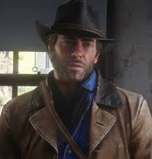

Arthur Morgan

Arthur Morgan é o protagonista do jogo Red Dead Redemption 2, desenvolvido pela Rockstar Games e lançado em 2018. Ele é um fora da lei e membro da gangue Van der Linde, que luta para sobreviver em um velho oeste em rápida mudança, no final do século XIX.
- Membro da gangue Van der Linde: Arthur é um dos principais integrantes dessa gangue de fora da lei que luta para sobreviver no Velho Oeste.
- Diagnóstico de tuberculose: Durante o jogo, Arthur descobre que está doente, o que impacta profundamente suas decisões e visão de mundo.
-
Personalidade complexa: Apesar de ser um fora da lei, Arthur demonstra lealdade, honra e empatia, tornando-o um personagem muito humano e profundo.
Perfil